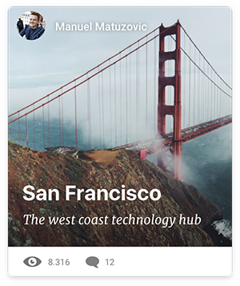

This article was originally published on CSS-Tricks.com.
Designing loading states on the web is often overlooked or dismissed as an afterthought. Performance is not only a developer's responsibility - building an experience that works with slow connections can be a design challenge as well.
While developers need to pay attention to things like minification or caching, designers have to think about how the UI will look and behave while it is in a “loading” or “offline” state.
The Illusion of Speed
Perceived performance is a measure of how fast something feels to the user. The idea is that users are more patient and will think of a system as faster, if they know what’s going on and can anticipate content before it’s actually there. It’s a lot about managing expectations, and keeping the user informed.
For a web app, this concept might include displaying “mockups” of text, images or other content elements - called skeleton screens 💀. You can find these in the wild, used by companies like Facebook, Google, Slack and others:
An Example
Say you are building a web app. It’s a travel-advice kind of thing where people can share their trips and recommend places, so your main piece of content might look something like this:

You can take that card and reduce it down to its basic visual shapes, the skeleton of the UI component.
Whenever someone requests new content from the server, you can immediately start showing the skeleton, while data is being loaded in the background. Once the content is ready, simply swap the skeleton for the actual card. This can be done with plain vanilla Javascript, or using a library like React.
Now you could use an image to display the skeleton, but that would introduce an additional request and data overhead. We’re already loading stuff here, so it’s not a great idea to wait for another image to load first. Plus it’s not responsive, and if we ever decided to adjust some of the content card’s styling, we would have to duplicate the changes to the skeleton image so they’d match again. 😒 Meh.
A better solution is to create the whole thing with just CSS. No extra requests, minimal overhead, not even any additional markup. And we can build it in a way that makes changing the design later much easier.
Drawing Skeletons in CSS
First, we need to draw the basic shapes that will make up the card skeleton. We can do this by adding different gradients to the background-image property. By default, linear gradients run from top to bottom, with different color stop transitions. If we just define one color stop and leave the rest transparent, we can draw shapes.
Keep in mind that multiple background-images are stacked on top of each other here, so the order is important. The last gradient definition will be in the back, the first at the front.
.skeleton {
background-repeat: no-repeat;
background-image:
/* layer 2: avatar */
/* white circle with 16px radius */
radial-gradient(circle 16px, white 99%, transparent 0),
/* layer 1: title */
/* white rectangle with 40px height */
linear-gradient(white 40px, transparent 0),
/* layer 0: card bg */
/* gray rectangle that covers whole element */
linear-gradient(gray 100%, transparent 0);
}These shapes stretch to fill the entire space, just like regular block-level elements. If we want to change that, we’ll have to define explicit dimensions for them. The value pairs in background-size set the width and height of each layer, keeping the same order we used in background-image:
.skeleton {
background-size:
32px 32px, /* avatar */
200px 40px, /* title */
100% 100%; /* card bg */
}The last step is to position the elements on the card. This works just like position:absolute, with values representing the left and top property. We can for example simulate a padding of 24px for the avatar and title, to match the look of the real content card.
.skeleton {
background-position:
24px 24px, /* avatar */
24px 200px, /* title */
0 0; /* card bg */
}Break it up with Custom Properties
This works well in a simple example - but if we want to build something just a little more complex, the CSS quickly gets messy and very hard to read. If another developer was handed that code, they would have no idea where all those magic numbers are coming from. Maintaining it would surely suck.
Thankfully, we can now use custom CSS properties to write the skeleton styles in a much more concise, developer-friendly way - and even take the relationship between different values into account:
.skeleton {
/*
define as separate properties
*/
--card-height: 340px;
--card-padding:24px;
--card-skeleton: linear-gradient(gray var(--card-height), transparent 0);
--title-height: 32px;
--title-width: 200px;
--title-position: var(--card-padding) 180px;
--title-skeleton: linear-gradient(white var(--title-height), transparent 0);
--avatar-size: 32px;
--avatar-position: var(--card-padding) var(--card-padding);
--avatar-skeleton: radial-gradient(
circle calc(var(--avatar-size) / 2),
white 99%,
transparent 0
);
/*
now we can break the background up
into individual shapes
*/
background-image:
var(--avatar-skeleton),
var(--title-skeleton),
var(--card-skeleton);
background-size:
var(--avatar-size),
var(--title-width) var(--title-height),
100% 100%;
background-position:
var(--avatar-position),
var(--title-position),
0 0;
}Not only is this a lot more readable, it’s also way easier to change some of the values later on.
Plus we can use some of the variables (think --avatar-size, --card-padding, etc.) to define the styles for the actual card and always keep it in sync with the skeleton version.
Adding a media query to adjust parts of the skeleton at different breakpoints is now also quite simple:
@media screen and (min-width: 47em){
:root {
--card-padding: 32px;
--card-height: 360px;
}
}Caveat: Browser support for custom properties is good, but not at 100%. Basically all modern browsers have support, with IE/Edge a bit late to the party. For this specific usecase, it would be easy to add a fallback using Sass variables though.
Add Animation
To make this even better, we can animate our skeleton and make it look more like a loading indicator. All we need to do is put a new gradient on the top layer and then animate its position with @keyframes.
Here’s a full example of how the finished skeleton card could look:
Skeleton Loading Card by Max Böck (@mxbck) on CodePen.
💡 Pro Tip: You can use the :empty selector and a pseudo element to draw the skeleton, so it only applies to empty card elements. Once the content is injected, the skeleton screen will automatically disappear.
More on Designing for Performance
For a closer look at designing for perceived performance, check out these links:
- Designer VS. Developer #8: Designing for Great Performance
- Harry Roberts: Improving Perceived Performance with Multiple Background Images
- Sitepoint: A Designer’s Guide to Perceived Performance
- Manuel Wieser: Dominant Color Lazy Loading